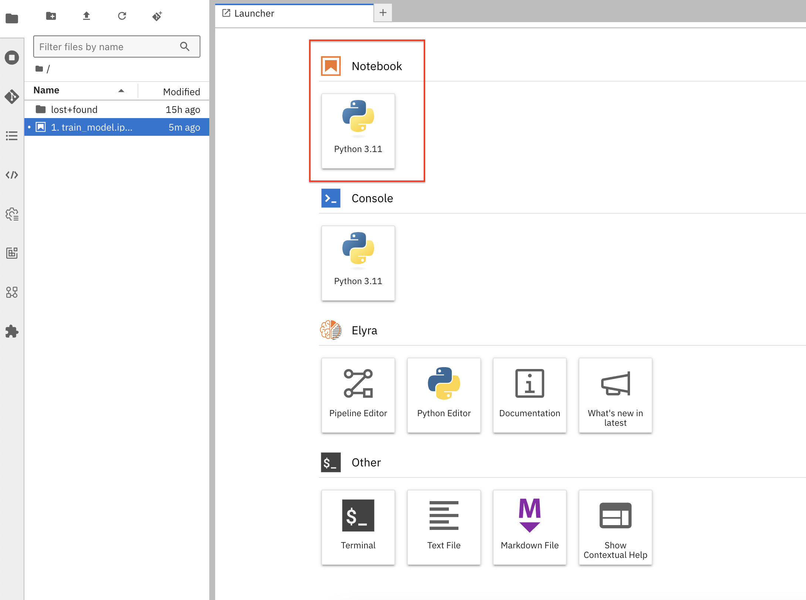
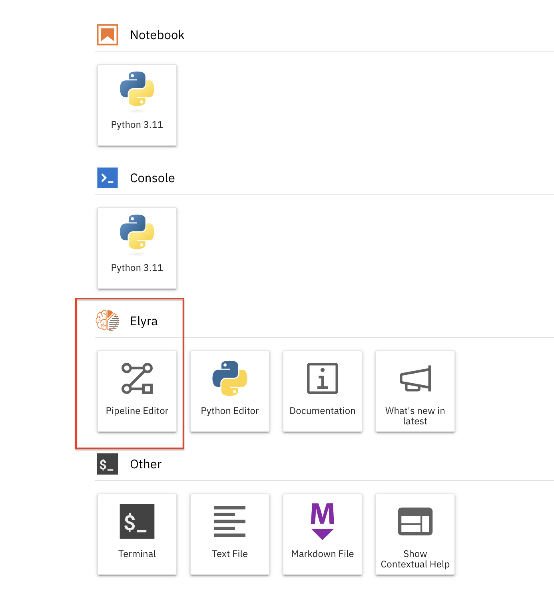
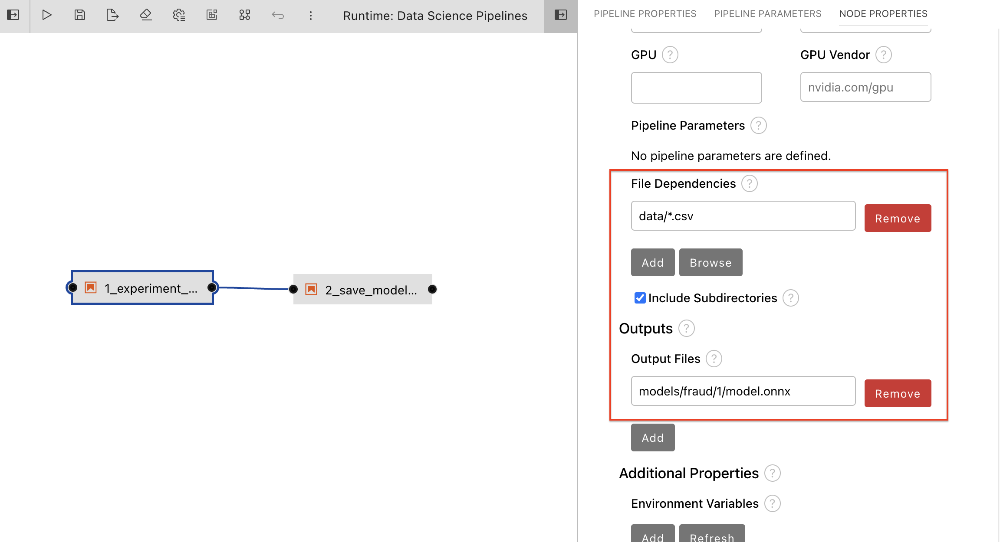
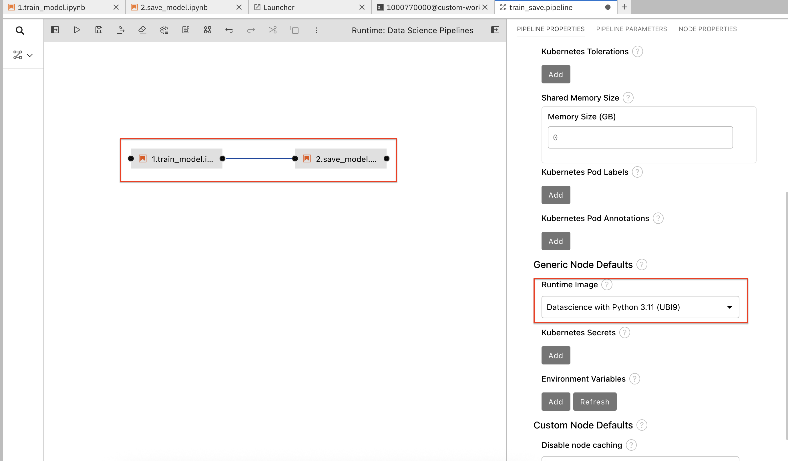
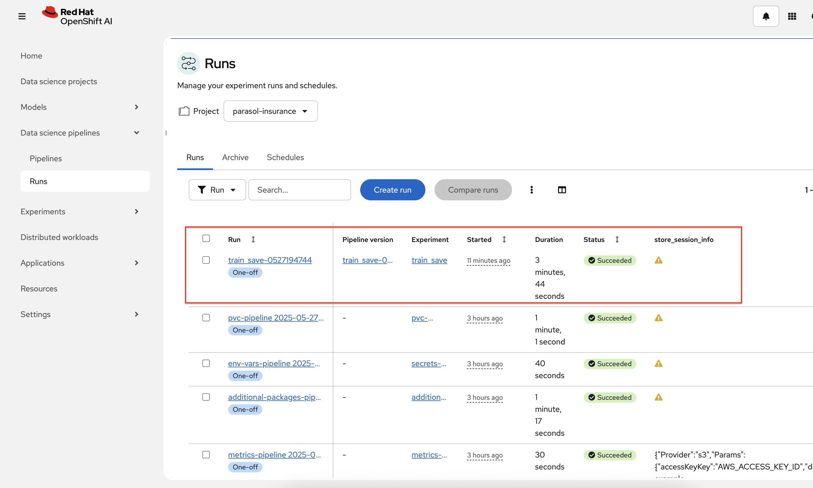

Introduction to Elyra Pipelines
In this section, we learn about elyra pipelines. Elyra pipelines are a way to orchestrate and manage machine learning workflows. They provide a structured approach to defining and executing tasks in a sequential manner. Elyra pipelines can be created using a visual editor, making it easy for users to design and customize their workflows.
Elyra Runtime Configuration in Jupyter Notebooks
In OpenShift AI, you can manage runtime configurations using the JupyterLab UI.
A runtime configuration provides Elyra access to the Data Science Pipelines backend for scalable pipeline execution.
| The runtime configuration is included and is pre-configured for submitting pipelines to Data Science Pipelines only when the pipeline server is created in the project before the workbench is created. |
Creating a Data Science Pipeline with Elyra
-
Create a new directory named
datain the root folder and upload the following files (test.csv, train.csv,validate.csv) You can download the file by clicking the link below:
Create notebook to train a model
-
Open the
standard-workbenchinparasol-insuranceproject. Click on Launcher and create a new python notebook1.train_model.ipynb -
Add the following content to
1.train_model.ipynbnotebook.!pip install onnx==1.17.0 onnxruntime==1.20.1 tf2onnx==1.16.1 keras tensorflow -
Add a new cell and add the following content:
import numpy as np import pandas as pd import datetime from keras.models import Sequential from keras.layers import Dense, Dropout, BatchNormalization, Activation from sklearn.model_selection import train_test_split from sklearn.preprocessing import StandardScaler from sklearn.utils import class_weight import tf2onnx import onnx import pickle from pathlib import Path -
Add a new cell and add the following content:
# Set the input (X) and output (Y) data. # The only output data is whether it's fraudulent. All other fields are inputs to the model. feature_indexes = [ 1, # distance_from_last_transaction 2, # ratio_to_median_purchase_price 4, # used_chip 5, # used_pin_number 6, # online_order ] label_indexes = [ 7 # fraud ] df = pd.read_csv('data/train.csv') X_train = df.iloc[:, feature_indexes].values y_train = df.iloc[:, label_indexes].values df = pd.read_csv('data/validate.csv') X_val = df.iloc[:, feature_indexes].values y_val = df.iloc[:, label_indexes].values df = pd.read_csv('data/test.csv') X_test = df.iloc[:, feature_indexes].values y_test = df.iloc[:, label_indexes].values # Scale the data to remove mean and have unit variance. The data will be between -1 and 1, which makes it a lot easier for the model to learn than random (and potentially large) values. # It is important to only fit the scaler to the training data, otherwise you are leaking information about the global distribution of variables (which is influenced by the test set) into the training set. scaler = StandardScaler() X_train = scaler.fit_transform(X_train) X_val = scaler.transform(X_val) X_test = scaler.transform(X_test) Path("artifact").mkdir(parents=True, exist_ok=True) with open("artifact/test_data.pkl", "wb") as handle: pickle.dump((X_test, y_test), handle) with open("artifact/scaler.pkl", "wb") as handle: pickle.dump(scaler, handle) # Since the dataset is unbalanced (it has many more non-fraud transactions than fraudulent ones), set a class weight to weight the few fraudulent transactions higher than the many non-fraud transactions. class_weights = class_weight.compute_class_weight('balanced', classes=np.unique(y_train), y=y_train.ravel()) class_weights = {i : class_weights[i] for i in range(len(class_weights))} -
Add a new cell and add the following content:
model = Sequential() model.add(Dense(32, activation='relu', input_dim=len(feature_indexes))) model.add(Dropout(0.2)) model.add(Dense(32)) model.add(BatchNormalization()) model.add(Activation('relu')) model.add(Dropout(0.2)) model.add(Dense(32)) model.add(BatchNormalization()) model.add(Activation('relu')) model.add(Dropout(0.2)) model.add(Dense(1, activation='sigmoid')) model.compile( optimizer='adam', loss='binary_crossentropy', metrics=['accuracy'] ) model.summary() -
Add a new cell and add the following content:
# Train the model and get performance import os import time start = time.time() epochs = 2 history = model.fit( X_train, y_train, epochs=epochs, validation_data=(X_val, y_val), verbose=True, class_weight=class_weights ) end = time.time() print(f"Training of model is complete. Took {end-start} seconds") -
Add a new cell and add the following content:
#Save the model import tensorflow as tf # Normally we use tf2.onnx.convert.from_keras. # workaround for tf2onnx bug https://github.com/onnx/tensorflow-onnx/issues/2348 # Wrap the model in a `tf.function` @tf.function(input_signature=[tf.TensorSpec([None, X_train.shape[1]], tf.float32, name='dense_input')]) def model_fn(x): return model(x) # Convert the Keras model to ONNX model_proto, _ = tf2onnx.convert.from_function( model_fn, input_signature=[tf.TensorSpec([None, X_train.shape[1]], tf.float32, name='dense_input')] ) # Save the model as ONNX for easy use of ModelMesh os.makedirs("models/fraud/1", exist_ok=True) onnx.save(model_proto, "models/fraud/1/model.onnx") -
Add a new cell and add the following content:
! ls -alRh ./models/ -
Add a new cell and add the following content:
#Test the model from sklearn.metrics import confusion_matrix, ConfusionMatrixDisplay import numpy as np import pickle import onnxruntime as rt -
Add a new cell and add the following content:
with open('artifact/scaler.pkl', 'rb') as handle: scaler = pickle.load(handle) with open('artifact/test_data.pkl', 'rb') as handle: (X_test, y_test) = pickle.load(handle) -
Add a new cell and add the following content:
sess = rt.InferenceSession("models/fraud/1/model.onnx", providers=rt.get_available_providers()) input_name = sess.get_inputs()[0].name output_name = sess.get_outputs()[0].name y_pred_temp = sess.run([output_name], {input_name: X_test.astype(np.float32)}) y_pred_temp = np.asarray(np.squeeze(y_pred_temp[0])) threshold = 0.95 y_pred = np.where(y_pred_temp > threshold, 1, 0) -
Add a new cell and add the following content:
from sklearn.metrics import precision_score, recall_score, confusion_matrix, ConfusionMatrixDisplay import numpy as np y_test_arr = y_test.squeeze() correct = np.equal(y_pred, y_test_arr).sum().item() acc = (correct / len(y_pred)) * 100 precision = precision_score(y_test_arr, np.round(y_pred)) recall = recall_score(y_test_arr, np.round(y_pred)) print(f"Eval Metrics: \n Accuracy: {acc:>0.1f}%, " f"Precision: {precision:.4f}, Recall: {recall:.4f} \n") c_matrix = confusion_matrix(y_test_arr, y_pred) ConfusionMatrixDisplay(c_matrix).plot() -
Add a new cell and add the following content:
sally_transaction_details = [ [0.3111400080477545, 1.9459399775518593, 1.0, 0.0, 0.0] ] prediction = sess.run([output_name], {input_name: scaler.transform(sally_transaction_details).astype(np.float32)}) print("Is Sally's transaction predicted to be fraudulent? (true = YES, false = NO) ") print(np.squeeze(prediction) > threshold) print("How likely was Sally's transaction to be fraudulent? ") print("{:.5f}".format(100 * np.squeeze(prediction)) + "%")
Create a new notebook to save the model
-
Create a new jupyter notebook
2.save_model.ipynband add the following content:!pip install boto3==1.35.55 botocore==1.35.55 -
Add a new cell and add the following content:
import os import boto3 import botocore aws_access_key_id = os.environ.get('AWS_ACCESS_KEY_ID') aws_secret_access_key = os.environ.get('AWS_SECRET_ACCESS_KEY') endpoint_url = os.environ.get('AWS_S3_ENDPOINT') region_name = os.environ.get('AWS_DEFAULT_REGION') bucket_name = os.environ.get('AWS_S3_BUCKET') print(f"{aws_access_key_id}") if not all([aws_access_key_id, aws_secret_access_key, endpoint_url, region_name, bucket_name]): raise ValueError("One or more connection variables are empty. " "Please check your connection to an S3 bucket.") session = boto3.session.Session(aws_access_key_id=aws_access_key_id, aws_secret_access_key=aws_secret_access_key) s3_resource = session.resource( 's3', config=botocore.client.Config(signature_version='s3v4'), endpoint_url=endpoint_url, region_name=region_name) bucket = s3_resource.Bucket(bucket_name) def upload_directory_to_s3(local_directory, s3_prefix): num_files = 0 for root, dirs, files in os.walk(local_directory): for filename in files: file_path = os.path.join(root, filename) relative_path = os.path.relpath(file_path, local_directory) s3_key = os.path.join(s3_prefix, relative_path) print(f"{file_path} -> {s3_key}") bucket.upload_file(file_path, s3_key) num_files += 1 return num_files def list_objects(prefix): filter = bucket.objects.filter(Prefix=prefix) for obj in filter.all(): print(obj.key)Updated custom notebook.yaml to avoid storage related errors.apiVersion: kubeflow.org/v1 kind: Notebook metadata: annotations: notebooks.opendatahub.io/inject-oauth: 'true' opendatahub.io/image-display-name: Datascience notebook notebooks.opendatahub.io/oauth-logout-url: '' opendatahub.io/accelerator-name: '' openshift.io/description: '' openshift.io/display-name: custom-workbench notebooks.opendatahub.io/last-image-selection: 'custom-notebook:latest' argocd.argoproj.io/sync-options: ServerSideApply=true name: custom-workbench namespace: parasol-insurance spec: template: spec: affinity: {} containers: - name: custom-workbench image: 'image-registry.openshift-image-registry.svc:5000/redhat-ods-applications/custom-notebook:latest' resources: limits: cpu: '2' memory: 8Gi requests: cpu: '1' memory: 8Gi readinessProbe: failureThreshold: 3 httpGet: path: /notebook/parasol-insurance/custom-workbench/api port: notebook-port scheme: HTTP initialDelaySeconds: 10 periodSeconds: 5 successThreshold: 1 timeoutSeconds: 1 livenessProbe: failureThreshold: 3 httpGet: path: /notebook/parasol-insurance/custom-workbench/api port: notebook-port scheme: HTTP initialDelaySeconds: 10 periodSeconds: 5 successThreshold: 1 timeoutSeconds: 1 env: - name: NOTEBOOK_ARGS value: |- --ServerApp.port=8888 --ServerApp.token='' --ServerApp.password='' --ServerApp.base_url=/notebook/parasol-insurance/custom-workbench --ServerApp.quit_button=False --ServerApp.tornado_settings={"user":"user1","hub_host":"","hub_prefix":"/projects/parasol-insurance"} - name: JUPYTER_IMAGE value: 'image-registry.openshift-image-registry.svc:5000/redhat-ods-applications/custom-notebook:latest' - name: PIPELINES_SSL_SA_CERTS value: /etc/pki/tls/custom-certs/ca-bundle.crt - name: GIT_SSL_CAINFO value: /etc/pki/tls/custom-certs/ca-bundle.crt - name: PIP_CERT value: /etc/pki/tls/custom-certs/ca-bundle.crt - name: REQUESTS_CA_BUNDLE value: /etc/pki/tls/custom-certs/ca-bundle.crt - name: SSL_CERT_FILE value: /etc/pki/tls/custom-certs/ca-bundle.crt ports: - containerPort: 8888 name: notebook-port protocol: TCP imagePullPolicy: Always volumeMounts: - mountPath: /opt/app-root/src name: custom-workbench - mountPath: /dev/shm name: shm - mountPath: /etc/pki/tls/custom-certs/ca-bundle.crt name: trusted-ca readOnly: true subPath: ca-bundle.crt workingDir: /opt/app-root/src envFrom: - secretRef: name: minio-data-connection enableServiceLinks: false serviceAccountName: custom-workbench volumes: - name: custom-workbench persistentVolumeClaim: claimName: custom-workbench - emptyDir: medium: Memory name: shm - configMap: items: - key: ca-bundle.crt path: ca-bundle.crt name: workbench-trusted-ca-bundle optional: true name: trusted-caUpdated minio-data-connection.yaml to avoid storage related errors.kind: Secret apiVersion: v1 metadata: name: minio-data-connection labels: opendatahub.io/dashboard: 'true' opendatahub.io/managed: 'true' annotations: opendatahub.io/connection-type: s3 openshift.io/display-name: minio-data-connection argocd.argoproj.io/sync-wave: "-100" stringData: AWS_ACCESS_KEY_ID: minio AWS_S3_ENDPOINT: http://minio.object-datastore.svc.cluster.local:9000 AWS_SECRET_ACCESS_KEY: minio123 AWS_DEFAULT_REGION: east-1 AWS_S3_BUCKET: pipelines type: Opaque -
Add a new cell and add the following content:
list_objects("models") -
Add a new cell and add the following content:
local_models_directory = "models" if not os.path.isdir(local_models_directory): raise ValueError(f"The directory '{local_models_directory}' does not exist. " "Did you finish training the model in the previous notebook?") num_files = upload_directory_to_s3("models", "models") if num_files == 0: raise ValueError("No files uploaded. Did you finish training and " "saving the model to the \"models\" directory? " "Check for \"models/fraud/1/model.onnx\"") -
Add a new cell and add the following content:
list_objects("models")
Create a pipeline using Elyra pipeline editor
-
Click on
Pipeline Editorand create a new pipeline. Name the pipeline astrain_save.pipeline` -
Drag and drop two notebooks just created (
1.train_modeland2.save_model) into the pipeline editor. -
Connect the output port of node
1.train_modelto the input port of node2.save_model. -
Update the pipeline parameters for node 1.train_model.
 -
Update the runtime image for both nodes to
Datascience with Python 3.11 (UBI9)created in the previous section. -
Update S3 storage
Kubernetes Secretsfor node 2.save_modelSolutionAWS_ACCESS_KEY_ID: <AWS_ACCESS_KEY_ID> AWS_SECRET_ACCESS_KEY: <AWS_SECRET_ACCESS_KEY> AWS_S3_BUCKET: <AWS_S3_BUCKET> AWS_S3_ENDPOINT: <AWS_S3_ENDPOINT> AWS_DEFAULT_REGION: <AWS_DEFAULT_REGION> -
Click on Run icon to run the pipeline. Pipline run can be viewed on RHOAI dashboard.

Pipeline execution
Elyra is now converting your pipeline definition into a YAML representation and sending it to the Data Science Pipelines backend. After a few seconds, you should see confirmation that the pipeline has been successfully submitted.
To monitor the pipeline’s execution, click on the Run Details link, which takes you to the pipeline run view within the RHOAI dashboard. Here you can track in real-time how each pipeline task is processed and whether it fails or resolves successfully.
To confirm that the pipeline has indeed produced fraud detection scoring results, view the content of the pipeline storage bucket. In the folder, there will be HTML files that show the status of each of the task executions.
Navigate back to the Experiment and Runs overview in the RHOAI dashboard. Click the experiment to see the history of all ongoing and previous pipeline executions of the same name and compare their run durations and status.
In the Scheduled tab you’re able to view runs of the pipeline according to a predefined schedule such as daily or according to a Cron statement.
Questions for Further Consideration
-
Will all the upstream Elyra features be avaiable on RHOAI?
-
How can you implement error handling strategies within your pipelines to manage failures effectively?
-
What techniques can be employed to optimize the performance of pipelines, especially when dealing with large datasets?